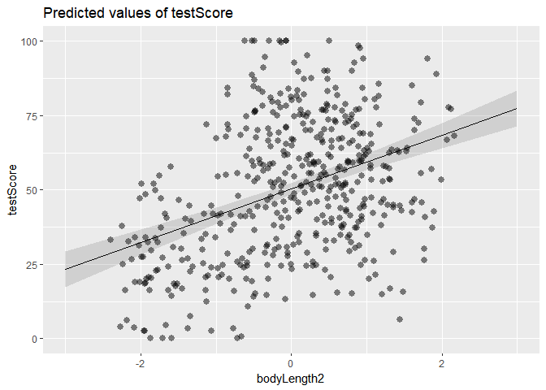
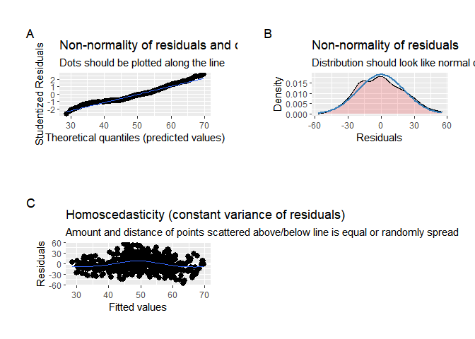
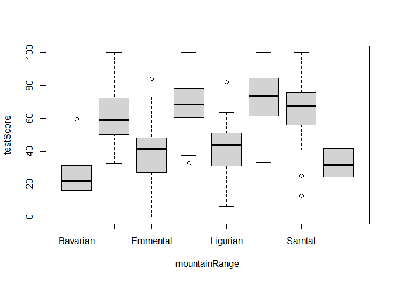
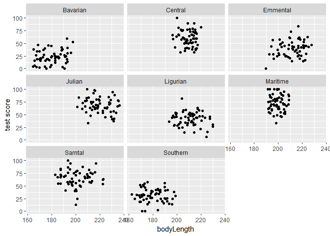
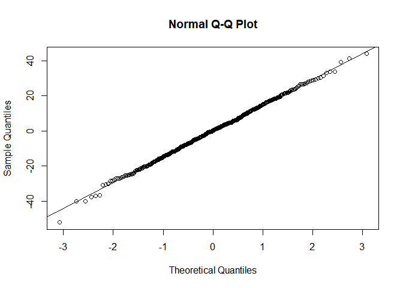
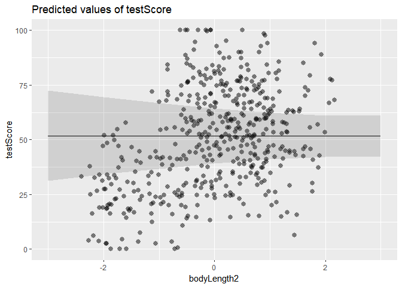
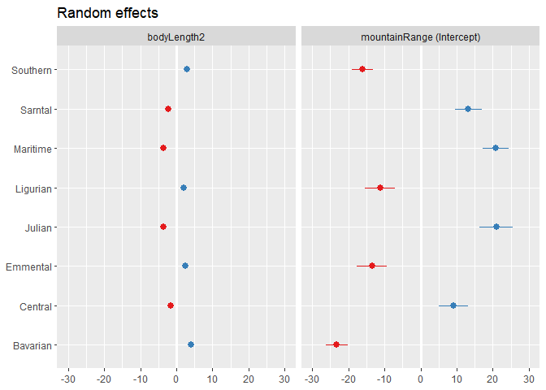
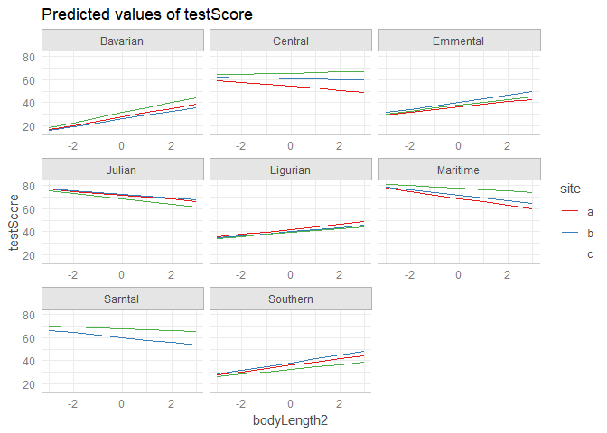
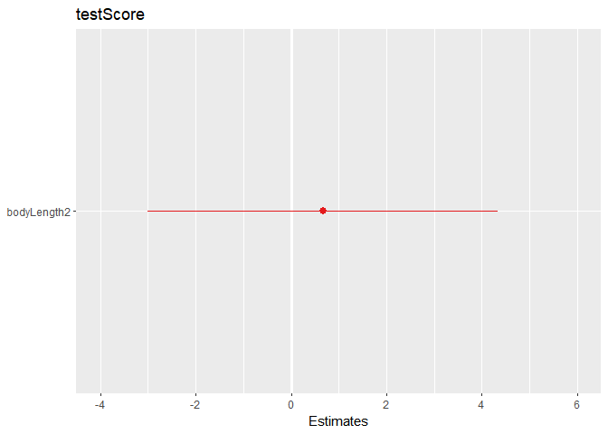
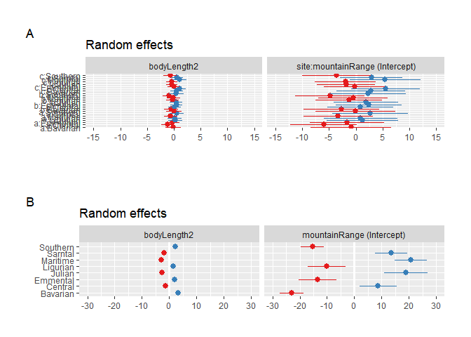

AlwaysR, Módulo III: Estadística en R.
Lab 04
Giancarlo M. Correa
En esta sección se resume los conceptos más importantes vistos en la parte práctica de cada clase.
Cargamos librerías a utilizar
library(ggplot2)
library(faraway)
library(Sleuth3)
library(nlme)
library(olsrr)
library(lme4)
library(sjPlot)
library(sjmisc)
library(ggeffects)Trabajemos con esta base de datos:
dragons = read.csv(file = 'dragons.csv')
dragons$bodyLength2 <- scale(dragons$bodyLength, center = TRUE, scale = TRUE)[,1]
head(dragons)## testScore bodyLength mountainRange site bodyLength2
## 1 16.147309 165.5485 Bavarian a -2.206233
## 2 33.886183 167.5593 Bavarian a -2.082204
## 3 6.038333 165.8830 Bavarian a -2.185605
## 4 18.838821 167.6855 Bavarian a -2.074419
## 5 33.862328 169.9597 Bavarian a -1.934145
## 6 47.043246 168.6887 Bavarian a -2.012538Esta base de datos ha sido obtenida de un muestreo de longitud del cuerpo y test score de unos dragones. Este muestreo vienen de un conjunto de montañas, y dentro de cada montaña se ha seleccionado tres sitios de muestreo, en cada uno de los cuales se han muestreado un número de dragones.
Modelo lineal simple
Con estos datos, podemos implementar un modelo lineal:
basic_lm = lm(testScore ~ bodyLength2, data = dragons)
summary(basic_lm)##
## Call:
## lm(formula = testScore ~ bodyLength2, data = dragons)
##
## Residuals:
## Min 1Q Median 3Q Max
## -56.962 -16.411 -0.783 15.193 55.200
##
## Coefficients:
## Estimate Std. Error t value Pr(>|t|)
## (Intercept) 50.3860 0.9676 52.072 <2e-16 ***
## bodyLength2 8.9956 0.9686 9.287 <2e-16 ***
## ---
## Signif. codes: 0 '***' 0.001 '**' 0.01 '*' 0.05 '.' 0.1 ' ' 1
##
## Residual standard error: 21.2 on 478 degrees of freedom
## Multiple R-squared: 0.1529, Adjusted R-squared: 0.1511
## F-statistic: 86.25 on 1 and 478 DF, p-value: < 2.2e-16Y graficar los resultados:
plot_model(model = basic_lm, type = 'pred', show.data = TRUE)## $bodyLength2
También podemos verificar los supuestos :
myDiag = plot_model(model = basic_lm, type = 'diag', show.data = TRUE)
plot_grid(myDiag)## Warning in plot_grid(myDiag): Not enough tags labels in list. Using letters
## instead.## `geom_smooth()` using formula 'y ~ x'
## `geom_smooth()` using formula 'y ~ x'
Modelo con efectos aleatorios simple
Podemos explorar el impacto de mountainRange sobre la
relación de las variables:
boxplot(testScore ~ mountainRange, data = dragons)
Y graficar esta relación por montaña:
ggplot(aes(bodyLength, testScore), data = dragons) +
geom_point() +
facet_wrap(~ mountainRange) +
xlab("bodyLength") +
ylab("test score")
La variable mountainRange es una variable agrupadora!
Este es un caso perfecto para incorporar un efecto aleatorio.
Implementemos el modelo de efectos mixtos:
mixed_lmer = lmer(testScore ~ bodyLength2 + (1 + bodyLength2|mountainRange), data = dragons)Como vemos, el intercepto y la pendiente varían. Exploramos los resultados:
summary(mixed_lmer)## Linear mixed model fit by REML ['lmerMod']
## Formula: testScore ~ bodyLength2 + (1 + bodyLength2 | mountainRange)
## Data: dragons
##
## REML criterion at convergence: 3980.5
##
## Scaled residuals:
## Min 1Q Median 3Q Max
## -3.5004 -0.6683 0.0207 0.6592 2.9449
##
## Random effects:
## Groups Name Variance Std.Dev. Corr
## mountainRange (Intercept) 324.102 18.003
## bodyLength2 9.905 3.147 -1.00
## Residual 221.578 14.885
## Number of obs: 480, groups: mountainRange, 8
##
## Fixed effects:
## Estimate Std. Error t value
## (Intercept) 51.75302 6.40349 8.082
## bodyLength2 -0.03326 1.68317 -0.020
##
## Correlation of Fixed Effects:
## (Intr)
## bodyLength2 -0.674
## optimizer (nloptwrap) convergence code: 0 (OK)
## boundary (singular) fit: see help('isSingular')Revisar los supuestos: distribución normal
qqnorm(resid(mixed_lmer))
qqline(resid(mixed_lmer))
Podemos plotear la línea estimada (efecto fijo):
plot_model(model = mixed_lmer, type = 'pred', show.data = TRUE)## $bodyLength2
Pero también podemos graficar el efecto por montaña:
Pero también podemos hacerlo por categoría:

Otra gráfica para evaluar resultados:
plot_model(mixed_lmer, type = 're')
Modelo jerárquico
¿Qué otra variable puedo incluir en el modelo como efecto aleatorio?
head(dragons, n = 10)## testScore bodyLength mountainRange site bodyLength2
## 1 16.147309 165.5485 Bavarian a -2.206233
## 2 33.886183 167.5593 Bavarian a -2.082204
## 3 6.038333 165.8830 Bavarian a -2.185605
## 4 18.838821 167.6855 Bavarian a -2.074419
## 5 33.862328 169.9597 Bavarian a -1.934145
## 6 47.043246 168.6887 Bavarian a -2.012538
## 7 2.557890 169.6194 Bavarian a -1.955135
## 8 3.875730 164.4163 Bavarian a -2.276072
## 9 3.597530 167.5104 Bavarian a -2.085219
## 10 7.358565 179.6061 Bavarian a -1.339137Site: Se ha muestreado en 3 sitios de muestreo
dentro de cada montainRange.
Implementamos un modelo lineal mixto jerárquico:
myModelo = lmer(testScore ~ bodyLength2 + (1 + bodyLength2|mountainRange/site), data = dragons)
summary(myModelo)## Linear mixed model fit by REML ['lmerMod']
## Formula: testScore ~ bodyLength2 + (1 + bodyLength2 | mountainRange/site)
## Data: dragons
##
## REML criterion at convergence: 3968.4
##
## Scaled residuals:
## Min 1Q Median 3Q Max
## -3.2654 -0.6737 -0.0200 0.6931 2.8432
##
## Random effects:
## Groups Name Variance Std.Dev. Corr
## site:mountainRange (Intercept) 19.8156 4.4515
## bodyLength2 0.7178 0.8472 1.00
## mountainRange (Intercept) 310.9691 17.6343
## bodyLength2 6.1119 2.4722 -1.00
## Residual 208.5025 14.4396
## Number of obs: 480, groups: site:mountainRange, 24; mountainRange, 8
##
## Fixed effects:
## Estimate Std. Error t value
## (Intercept) 51.4263 6.3408 8.110
## bodyLength2 0.6691 1.8729 0.357
##
## Correlation of Fixed Effects:
## (Intr)
## bodyLength2 -0.461
## optimizer (nloptwrap) convergence code: 0 (OK)
## boundary (singular) fit: see help('isSingular')Este es un ejemplo de modelo jerárquico.
Graficamos los resultados para cada grupo
myPlot2 = ggpredict(myModelo, terms = c("bodyLength2", "site", "mountainRange"), type = "random")
plot(myPlot2, ci = FALSE)
Graficamos el efecto fijo:
sjPlot::plot_model(myModelo)
Efectos aleatorios:
myPlot3 = sjPlot::plot_model(myModelo, type = 're')
plot_grid(myPlot3)## Warning in plot_grid(myPlot3): Not enough tags labels in list. Using letters
## instead.